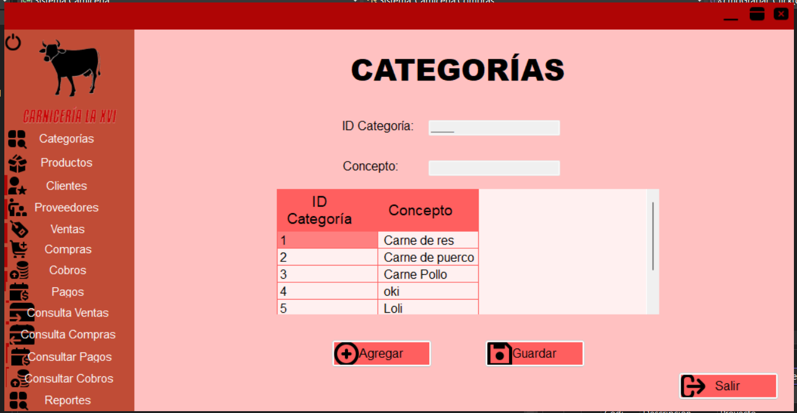
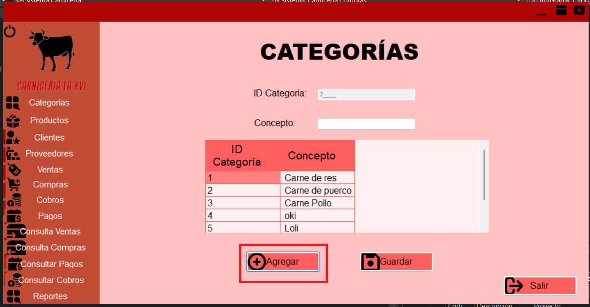
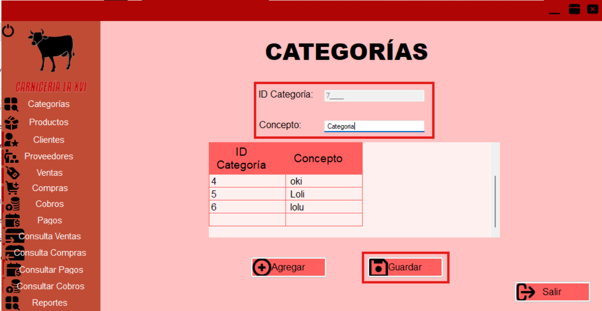

Ayuda -- Categorías
Introducción
El módulo de Catálogo de Categorías en nuestro sistema te permite gestionar la información relacionada
con las Categorías de tus productos de forma eficiente para mantener un orden. Desde aquí puedes agregar y consultar categorias.

Agregar Una Nueva Categoría
- Ingresa a la opción de Categoría en el apartado de Catalogos
- Dale clic al botón de "Nuevo" que se encuentra en la parte inferior de la pantalla

- Comienza a llenar los datos correspondientes en cada uno de sus apartados
- Para finalizar presiona el botón de "Grabar" que se encuentra en la parte inferior de la pantalla

Consultar Categorías
- Ingresa a la opción de categoría en el apartado de Catálogos
- En cuanto ingreses se mostrara en la pantalla todos los productos ingresados
- Cuando se ingresen los datos de un producto nuevo se actualizara la lista y aparecera en orden alfabético depende a su código de producto
Ejemplos y Casos de Uso
A continuación se presentan algunos ejemplos de cómo puedes utilizar el módulo de Catálogo de Categorías en situaciones comunes:
- Ejemplo 1: Agregar una Categoría para un nuevo producto que acaba de registrarse en tu tienda.
- Ejemplo 2: Consultar la información de las Categorías en funcionamiento.